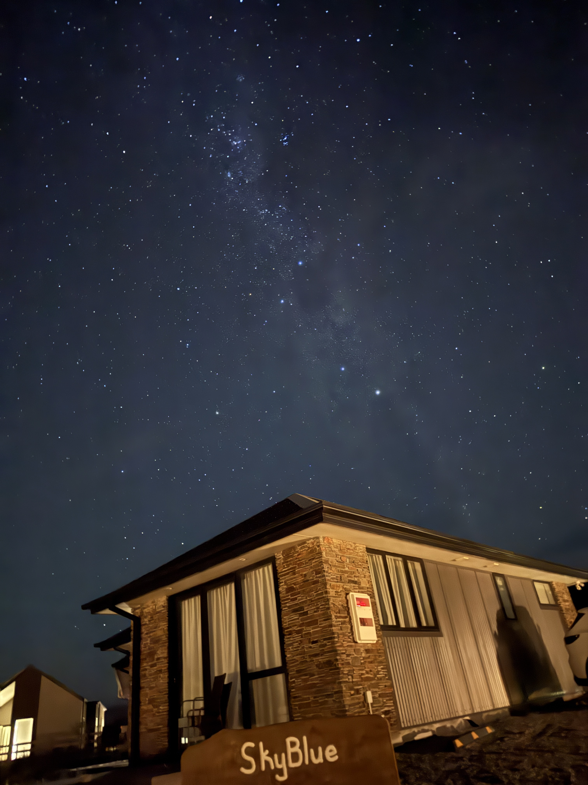

Welcome to Travel Journal
Where every adventurer's footsteps create stories, and every journey becomes a chapter in the grand tale of exploration.

Culinary Adventures
Where every journey becomes a feast for the senses, exploring local flavors and creating unforgettable memories.

Starlit Horizons
Where nature's grandest spectacle meets wanderlust, painting the night sky with a million stories waiting to be discovered.
Featured Journeys
Featured Events

Lake Tekapo's night sky
Lake Tekapo's night sky is a stunning wonder, famous for its clear stars, dazzling Milky Way, and pristine stargazing conditions in the Dark Sky Reserve.
Tasman River Adventure
Experience the breathtaking beauty of Tasman River, where turquoise waters flow through ancient glacial valleys. Witness the stunning contrast of milky waters against the rugged mountain backdrop.
Why Choose Travel Journal?
How can I track my travel journey?
Use our interactive maps to plot your route, mark visited locations, and share your favorite spots with fellow travelers. Create a visual timeline of your adventures.
How do I share my travel photos?
Create beautiful photo galleries for each event, organize memories by location, and share your visual stories with friends and family.
How can I connect with other travelers?
Join our community of explorers, share experiences, get travel tips, and make new friends who share your passion for adventure.